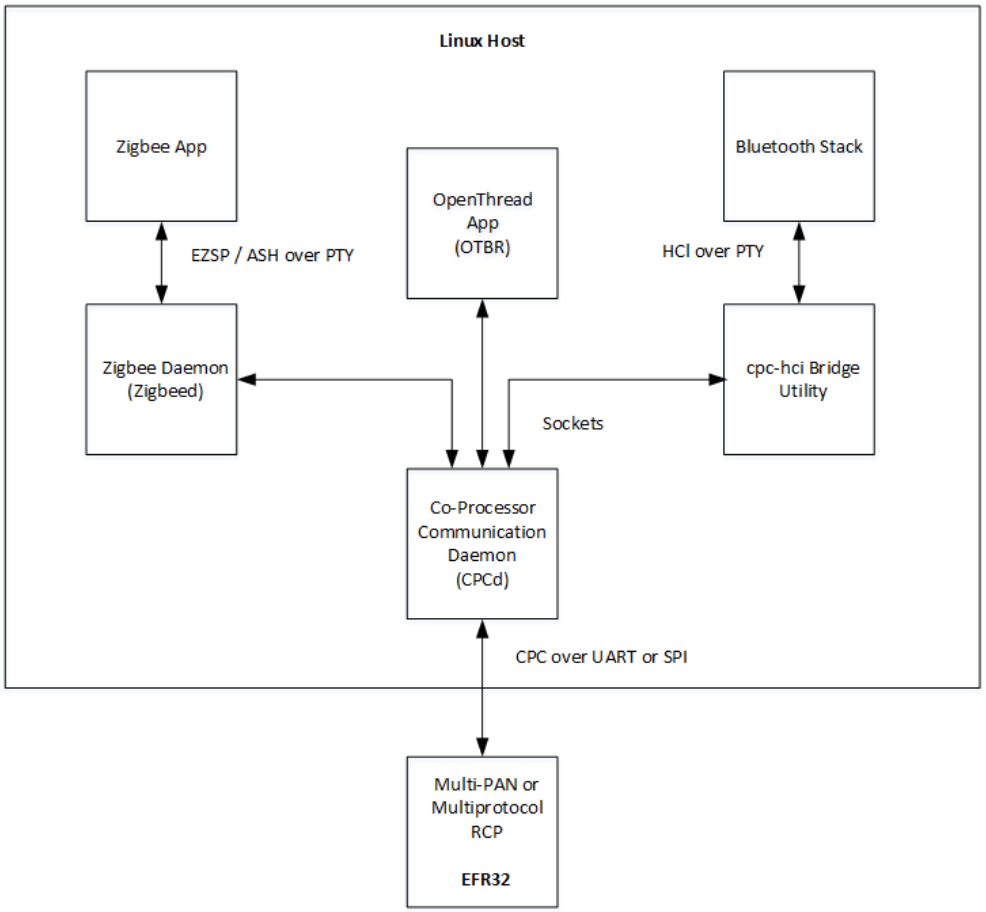

Multiprotocol Host Software
Overview
The Unify Host SDK aggregates all the host software necessary to run Zigbee, OpenThread, and Bluetooth protocol stacks on the host processor simultaneously while using a single RCP. For a detailed explanation of the multiprotocol host architecture, see AN1333.

The Host SDK makes it easy to install and run the software components on a Raspberry Pi via prebuilt binary Debian packages. Build scripts for creating the Debian packages are also provided. The sources themselves are obtained from the Silicon Labs GSDK and the Silicon Labs GitHub repository.
For instructions on quickly getting started using the multiprotocol host software, see the Multiprotocol Setup page.
RCP
The RCP (Radio Co-Processor) is an embedded application running on a Silicon Labs EFR32 radio chip connected to the host processor via a UART or SPI serial connection. There are different flavors of RCP depending on which protocol stacks are running on the host. The RCP software is distributed with the GSDK. For details on building RCP images for the co-processor, see AN1333.
CPC Daemon
The key host software component at the heart of the multiprotocol architecture is a multiplexer called CPCd (Co-Processor Communication daemon). CPCd runs on the host and acts as a reliable and secure serial transport layer to the RCP over either a UART or SPI serial bus. Each protocol stack running on the host connects to CPCd in order to communicate with the RCP. For more information see the CPCd page.
Zigbee
The Zigbee protocol stack runs on the host in a daemon called zigbeed. Zigbeed communicates with an 802.15.4 stack on the RCP via the SPINEL protocol. Zigbeed connects via sockets to CPCd, which transports the SPINEL messages over the serial bus to the RCP. A Zigbee host application connects to Zigbeed via a PTY (pseudo terminal) and communicates using the EZSP protocol. Two host applications are included with the Unify Host SDK: ZigPC, and Z3Gateway. To get started running zigbeed with CPCd, see the Multiprotocol Setup page.
OpenThread
The OpenThread Border Router (OTBR) is included in a binary Debian package with the Unify Host SDK. The version included is compiled from the GSDK with CPCd connectivity and multiprotocol capabilities enabled. It communicates to the 802.15.4 RCP using SPINEL via CPCd. It can run alongside zigbeed using the same RCP, provided both networks use the same 802.15.4 channel. To get started running OTBR with CPCd, see the Multiprotocol Setup page.
Bluetooth
BlueZ is the official Linux Bluetooth stack. A small utility called the cpc-hci-bridge is provided to connect BlueZ to CPCd so that it can communicate to a BLE link-layer enabled RCP using the HCI protocol. For more information see the CPC HCI Bridge page.